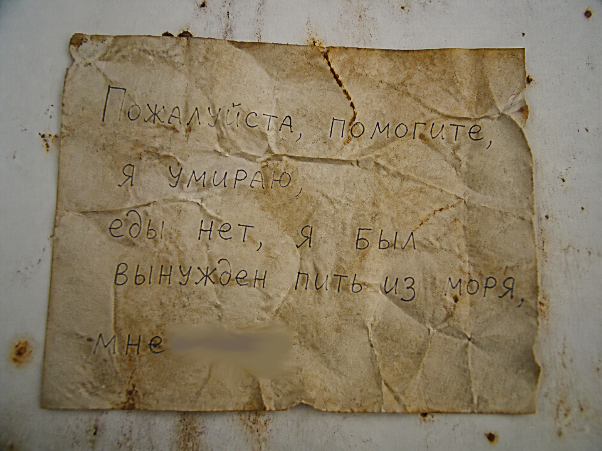

Автор: Sombik808
Дата обнаружения: 16 февраля 2026
Уровень 809 — это одинокий проржавевший насквозь промышленный контейнер, стоящий посреди бескрайнего свинцово-серого негостеприимного моря. Неба не видно — только густой липкий туман. Вода зловеще спокойна, но иногда по ней без причины пробегает рябь. Контейнер полностью плавает и меняет цвет и размер каждый день, подстраиваясь под эмоции того, кто внутри.
Единственный способ упасть в воду — споткнуться на шатком внешнем трапе. Некоторые ступеньки сломаны. Во время пребывания голод и жажда приходят быстрее, чем осознание безысходности, и могут начаться пугающие галлюцинации.
С каждым днём они всё убедительнее: тени в тумане, шаги на крыше, голоса, зовущие по имени. Ощущение, что внутри контейнера есть кто‑то ещё. Миндальная вода притупляет видения, но морская вода делает галлюцинации реальными.
На уровне 809 звук не распространяется. Крик, шёпот, шаги — всё гаснет в радиусе вытянутой руки. Единственные звуки, которые слышит странник:
«Друг» передвигается в полной тишине. Его появление невозможно предсказать — он просто возникает в тумане, не издавая ни звука. Это делает его ещё более опасным и пугающим.
«Я перестал верить своим ушам. Шаги за спиной могут быть моими. Крик — ветром. Тишина — единственное, что здесь реально. Но именно она сводит с ума быстрее галлюцинаций.» — из отчёта M.E.G., уровень допуска засекречен.
📝 Записка в бочке (2 апреля 2026)
Странник нашёл в бочке не еду, а листок с обрывочной надписью: «Пожалуйста, помогите, я умираю, еды нет, я был вынужден пить из моря, мне […]». Слова были частично неразборчивы.

📱 Находка M.E.G. на дне моря
Во время погружения исследователи обнаружили водонепроницаемый смартфон. Экран разбит, но память сохранила последний неотправленный запрос, открытый в китайской нейросети DeepSeek:
КАК ВЫЖИТЬ НА УРОВНЕ 809
Запрос не был отправлен. Связь оборвалась. Личность владельца не установлена. Эксперты предполагают, что странник пытался найти ответы в последние минуты, но телефон упал в воду вместе с ним.
«Он был так близко к ответу… но не нажал "отправить". Иногда секунда решает всё. Или 30 дней.» — из комментария исследователя, личность не установлена.
Контакт с морской водой смертелен. В ней обитают бактерии Aqua Mortem:
Серые, едва заметные бочки плавают вокруг контейнера. Внутри: продуктовые наборы, пластиковые бутылки с питьевой водой, иногда миндальная вода.
Примерно половина запасов отравлена — отравление можно определить по сильному запаху винограда. Последствия: слабость, потеря сознания на 3–6 часов, критическое обезвоживание. Миндальная вода нейтрализует эффекты.
Бочки не тонут, их можно поднять крюком или верёвкой, не касаясь воды. Новая партия появляется каждые 2–3 дня.
В исключительно редких случаях (менее 2% обычных бочек) вместо продуктов или воды странник находит бутылку с прозрачной жидкостью. По действию она полностью идентична миндальной воде: притупляет галлюцинации, снимает слабость, восстанавливает силы.
НО: эта жидкость пахнет виноградом. Сильно и явно.
Странник оказывается перед выбором: выбросить бочку (как отравленную) и потерять потенциальное лекарство или рискнуть и выпить. Если это действительно яд — его ждёт слабость, потеря сознания и критическое обезвоживание. Если «виноградовая вода» — он получит спасение.
«Раньше я знал: запах винограда — смерть. Теперь я не знаю ничего. Каждая бочка может быть ловушкой. Каждая — спасением. Я нюхаю, сомневаюсь, вспоминаю вкус миндаля. И каждый раз молюсь, чтобы не ошибиться.» — из дневника выжившего, личность не установлена.
В ≈5% случаев вместо обычной серой бочки появляется полностью чёрная бочка с белым контуром крышки. Она не пахнет виноградом (не отравлена) и всегда содержит ценный ресурс (полная ёмкость миндальной воды, редкие лекарства, высококалорийные рационы, иногда неизвестный артефакт).
⚠️ Риск, за которым стоит расплата
С вероятностью 75% уровень «замечает», что вы открыли аномалию. Начинается красный час:
После окончания красного часа:
Странник остаётся на уровне на дополнительные 10 дней (общий срок вместо 30 дней становится 40 дней). «Друг» успокаивается и возвращается к обычному нейтральному поведению.
📊 Повышенный шанс отравления
После чёрной бочки следующие 10 обычных бочек имеют 75% вероятности быть отравленными (вместо обычных 50%). Запах винограда по‑прежнему работает — но проверять нужно каждую бочку, риск ошибиться выше. После этих 10 бочек шанс отравления возвращается к стандартным 50%.
❗ Если открыть чёрную бочку во второй раз (и в последующие) — эффект повторяется: снова 5 часов красного неба, +10 дней к сроку, и снова 10 следующих бочек с повышенным шансом отравления (75%). Чёрные бочки крайне редки (обычно не более 2 раз за один визит на уровень, хотя известны аномальные случаи).
«Она чёрная, как дыра в памяти. Я знал, что не надо её открывать, но внутри была целая бочка миндальной воды. Потом небо стало красным, а "друг" зашипел. Я не открывал её, я сам открыл дверь в эти десять дней.» — из неподтверждённых записей выжившего.
В обычных серых бочках (не чёрных) иногда вместо еды или воды попадаются странные, на первый взгляд бесполезные вещи. Но, как показывают отчёты M.E.G., они могут помочь выжить — если проявить смекалку.
«Я сделал пол из старых тряпок. Теперь не скольжу. Но каждый раз, когда контейнер сжимается, мне кажется, что ткань начинает шевелиться. Сама по себе. Или это уже моя паранойя?» — из дневника выжившего, данные не подтверждены.
Постоянных поселений нет. Изредка встречаются 2–3 человека, но ресурсов слишком мало, чтобы делиться.
Вход: окунуться в воду на 1 минуту в любом из следующих мест:
Вероятность перехода — менее 0.1% (случайное, трудно предсказуемое событие). Редкая аномалия: ржавая дверь, ведущая на Уровень 2 или 4, вместо привычного коридора открывается на серое море.
Выход: ровно через 30 дней сознание отключается, и странник просыпается на случайном уровне сложности Class 2, держа в руке двухлитровую бутылку миндальной воды. Контейнер, море и туман исчезают навсегда.
🕒 Последнее обновление дневника: 6 мая 2026, 20:00